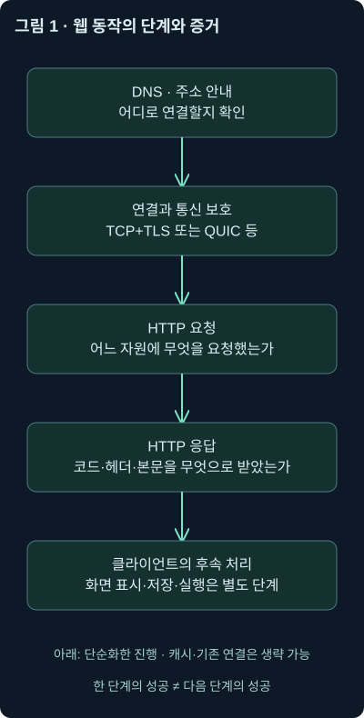
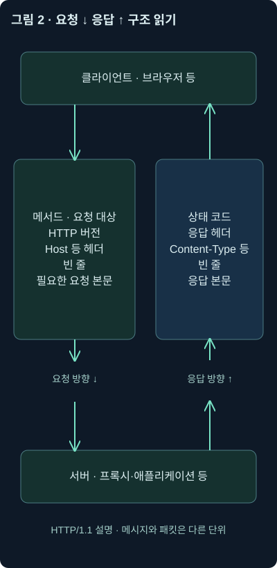
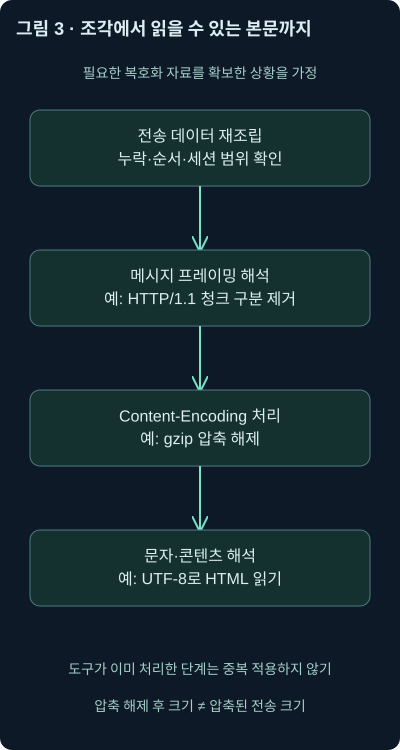
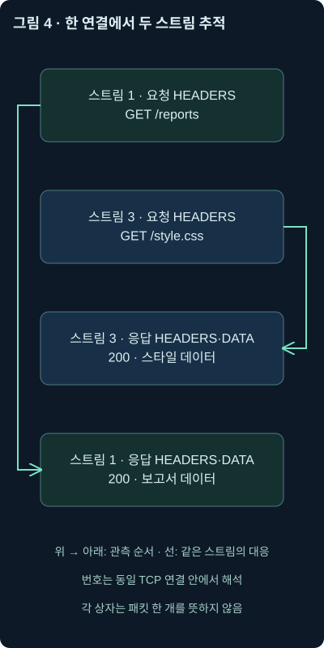
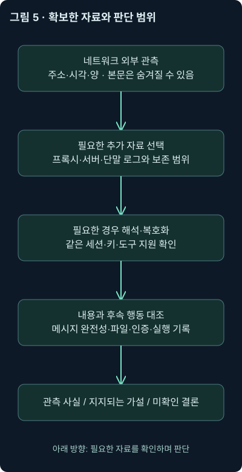

HTTP의 동작 원리 — 웹 요청과 응답 읽기
6강. URL·메서드·요청·응답·헤더·상태 코드에서 HTTP/2·3까지, 웹 통신의 구조를 근거 중심으로 읽습니다.
1. 주소를 찾았는데, 웹페이지는 어떻게 가져올까요?
회사 게시판에서 보고서를 열려고 주소를 입력했습니다. 앞 강의에서 배운 DNS가 서버 주소를 알려줬습니다. 이제 서버와 연결됐으니 보고서도 이미 받은 걸까요? 그렇지는 않습니다. 어디에 연락할지 알아낸 뒤에도 무엇을 원하는지 말하고, 그 요청에 대한 답을 받아야 합니다.
식당의 위치를 알아낸 것과 주문해서 음식을 받은 것은 다른 일이지요. 웹에서도 클라이언트가 원하는 자원을 요청하고 서버가 처리 결과와 데이터를 응답합니다. 이때 사용하는 대화 규칙이 HTTP, Hypertext Transfer Protocol입니다. 클라이언트는 요청을 시작하는 쪽이고, 서버는 요청을 처리하는 쪽입니다. 브라우저뿐 아니라 업데이트 프로그램·보안 도구·자동화 프로그램도 클라이언트가 될 수 있습니다.
이번 6강은 웹 서버, URL 구성, HTTP 메서드, 요청·응답 헤더, 상태 코드, 압축과 길이, HTTP/2·3와 WebSocket을 다룹니다. 다음 강의에서는 이 구조를 바탕으로 HTTP·HTTPS의 의심스러운 통신을 조사합니다. 여기서는 먼저 정상 대화를 읽고, 그 대화만으로 무엇을 확인할 수 있는지 익히겠습니다.
접근 가능한 본 교재로 이번 범위를 확인했습니다. 별도 워크북은 앞서 확인한 교재 폴더와 작업 폴더에서 찾지 못했으며, 이번 설명은 원래 실습의 실행 결과가 아닙니다. 아래 HTTP 메시지·주소·프로그램명·상황은 독립적인 자체 가상 예제입니다. 교재 원문 화면이나 실제 악성 사이트의 주소를 그대로 게시하지 않습니다.
공식 문서 확인 날짜는 2026년 11월 2일입니다. URL 분해, 예제 본문의 바이트 수, gzip 압축·해제는 로컬에서 확인했습니다. 실제 사이트 요청·패킷 수집·TLS 복호화·Wireshark 필터 실행은 수행하지 않았습니다. 웹사이트 게시 검증과 통신 분석의 실행 범위를 구분합니다.
2. 웹 서버는 파일을 꺼내줄 수도, 답을 만들어줄 수도 있습니다
작은 안내 페이지를 운영한다면 서버가 저장된 HTML 파일을 읽어 보내는 모습을 떠올릴 수 있습니다. HTML은 문서의 구조, CSS는 표시 모양, JavaScript는 실행 동작을 정의하는 데 사용하는 기술입니다. 페이지 하나가 다른 스타일·스크립트·그림을 참조하면 추가 요청이 이어질 수 있습니다.
하지만 웹 서버를 디스크의 파일을 나눠주는 프로그램으로만 이해하면 곧 한계가 생깁니다. /reports/42라는 경로를 받았을 때 실제로 reports 폴더의 42라는 파일을 여는 대신, 로그인 상태를 확인하고 데이터베이스에서 자료를 읽어 응답을 만들 수도 있습니다. 데이터를 저장·검색하는 시스템을 데이터베이스라고 부릅니다.
Apache HTTP Server, nginx, IIS 같은 서버 제품은 파일을 제공하거나 뒤쪽 애플리케이션에 요청을 전달할 수 있습니다. 플러그인·모듈·설정에 따라 처리도 달라집니다. 중간에서 요청을 받아 다른 서버에 넘기는 리버스 프록시가 앞에 있을 수도 있습니다. 이때 외부에서 보이는 서버 이름과 실제 업무 처리를 한 프로그램이 같다고 가정하지 마세요.
따라서 조사에서는 “이 경로가 보이니 서버 디스크에 같은 파일이 있다”까지 바로 결론 내리지 않습니다. 경로, 서버의 라우팅 설정, 애플리케이션 로그, 필요하면 파일 시스템 기록을 연결합니다. 라우팅은 여기서 URL을 어떤 처리기로 보낼지 정하는 규칙을 뜻하며, 앞서 배운 IP 라우터의 경로 선택과는 층위가 다릅니다.
3. DNS, 연결, 보호, HTTP, 화면 표시를 나눠봅시다

그림은 처음 접속하는 단순한 예입니다. 위에서 아래로 DNS로 주소를 얻고, 필요한 연결과 통신 보호를 설정하고, HTTP 요청·응답을 주고받고, 마지막에 브라우저가 내용을 처리합니다. 캐시나 이미 열린 연결이 있으면 일부 단계가 새로 보이지 않을 수도 있습니다.
HTTPS는 HTTP 통신을 TLS로 보호하는 방식을 가리킵니다. TLS는 통신 상대 인증과 기밀성·무결성을 제공하는 프로토콜입니다. 즉 내용이 남에게 읽히거나 중간에서 바뀌는 위험을 줄입니다. 정상 인증서가 있다고 그 사이트의 의도나 내려받은 파일까지 안전하다는 뜻은 아닙니다.
DNS 응답은 주소 안내의 근거, TCP 연결은 연결 단계의 근거, HTTP 응답은 요청 처리 결과의 근거입니다. 화면 표시·로그인·파일 실행은 또 다른 단계입니다. 어떤 로그에 200이 찍혔다고 사용자가 내용을 읽었거나 내려받은 프로그램을 실행했다고 쓰면 단계를 건너뛰게 됩니다.
HTTP/1.1과 흔한 HTTPS 기반 HTTP/2는 TCP를 사용하지만, HTTP/3는 QUIC을 사용합니다. 뒤에서 다시 비교하겠습니다. 지금은 그림을 모든 버전의 정확히 같은 패킷 순서라고 외우지 말고, 어떤 단계의 증거를 보고 있는지 나누는 기준으로 읽어주세요.
4. 긴 URL을 작은 조각으로 나누면 질문이 분명해집니다
다음은 실제로 접속하지 않는 문서용 예제입니다.
https://portal.example.com:8443/reports/view?id=42&format=html#summaryURL은 자원의 위치와 접근 방법을 나타내는 주소입니다. 더 일반적인 자원 식별자라는 문맥에서는 URI라는 용어도 사용합니다. 둘의 분류를 외우기보다, 현재 읽는 주소를 어떤 규칙으로 분해하는지가 중요합니다.
| 조각 | 이번 값 | 먼저 해볼 질문 |
|---|---|---|
| 스킴 | https | 어떤 접근 방식과 보호를 기대하는가 |
| 호스트 | portal.example.com | 어떤 이름의 서비스를 요청하는가 |
| 명시한 포트 | 8443 | 기본값과 다른 이유가 있는가 |
| 경로 | /reports/view | 어떤 자원을 가리키는가 |
| 질의 문자열 | id=42&format=html | 애플리케이션에 어떤 입력을 보냈는가 |
| 프래그먼트 | summary | 클라이언트가 자원의 어느 부분을 가리키는가 |
스킴은 주소 앞의 접근 방식 이름입니다. 호스트는 서비스 이름이며 하나의 물리적 컴퓨터와 일대일로 대응하지 않을 수 있습니다. example.com 아래의 portal이라는 레이블이 있고, DNS 부하 분산이나 프록시 때문에 같은 이름을 여러 서버가 처리할 수도 있습니다. 경로도 실제 폴더라고 단정하지 않습니다.
명시된 포트가 없으면 보통 HTTP는 80, HTTPS는 443을 기본값으로 해석합니다. 8443·8080 같은 다른 포트의 정상 서비스도 있습니다. 반대로 포트 번호가 443이라는 사실만으로 내용을 HTTPS라고 확정할 수는 없습니다. 프록시를 통하면 네트워크 연결 대상 포트와 최종 자원의 포트가 달라질 수도 있습니다.
프래그먼트는 일반적인 HTTP 요청 대상에 포함되지 않습니다. 브라우저가 페이지 안 위치를 고르는 데 사용할 수 있고, 웹 애플리케이션이 읽어 별도 요청을 만들 수도 있습니다. 따라서 원래 요청 줄에 #summary가 없다고 수집이 잘렸다고 판단하지 않습니다. URI 구성과 프래그먼트 RFC 3986
5. 질의 문자열은 GET 전용도, 사용자의 의도를 그대로 보여주는 기록도 아닙니다
예제의 ? 뒤는 질의 문자열입니다. 흔히 이름=값을 &로 나누지만, 그 의미는 애플리케이션이 정합니다. id=42가 문서 번호일 수도 있고 다른 식별자일 수도 있으므로 이름만으로 업무 의미를 확정하지 않습니다.
질의 문자열은 POST URL에도 붙을 수 있습니다. 반대로 GET에 본문을 임의로 붙였다고 모든 서버가 같은 방식으로 처리하는 것도 아닙니다. 일반적인 GET 본문에는 널리 합의된 공통 의미가 없고 구현이 거부할 수도 있으므로, 메서드와 URL·본문을 함께 읽습니다. GET의 의미와 본문 제약
%2F처럼 %와 두 자리 16진수를 사용해 바이트를 표현하는 것을 퍼센트 인코딩이라고 부릅니다. 변환 전 원문을 보존한 뒤 규칙에 맞게 해석해야 합니다. 경로의 /와 인코딩된 %2F가 모든 처리 단계에서 같은 경계를 만든다고 가정하지 마세요. 이중 변환을 무심코 적용하면 원래 의미가 달라질 수 있습니다.
+도 모든 URL 위치에서 공백이라는 뜻은 아닙니다. 폼의 application/x-www-form-urlencoded 규칙과 일반 URL 경로의 규칙은 다릅니다. 같은 이름의 매개변수가 반복될 때 첫 값·마지막 값·전체 값을 사용하는지도 구현에 달려 있습니다. 분석자가 임의로 정렬·삭제·중복 제거하기 전에 원래 순서를 남깁니다.
로컬 URL 분해로 위 예제의 호스트·포트·경로·질의·프래그먼트가 분리되는 것을 확인했습니다. 이것은 실제 웹 요청을 전송한 결과가 아닙니다. 주소를 분해한 것과 그 주소의 서버 동작을 검증한 것은 다릅니다.
6. HTTP/1.1 메시지는 첫 줄, 헤더, 빈 줄, 본문으로 읽습니다
주문서의 첫 줄에 “무엇을 해달라”를 쓰고 그 아래에 조건을 적는 모습을 떠올려보세요. HTTP/1.1 요청은 대체로 다음처럼 읽을 수 있습니다. 아래는 첫 URL에 해당하는 HTTPS 내부 메시지를 읽을 수 있다고 가정한 설명용 표현입니다.
GET /reports/view?id=42&format=html HTTP/1.1
Host: portal.example.com:8443
User-Agent: TrainingBrowser/6.0 (ExampleOS 1.0)
Accept: text/html
첫 줄의 GET은 요청 동작인 메서드, 그다음은 요청 대상, 마지막은 HTTP 버전입니다. Host처럼 콜론 앞에 오는 이름과 뒤의 값을 함께 헤더 필드라고 부릅니다. 헤더는 메시지를 처리하기 위한 부가 정보입니다. 빈 줄이 헤더 부분의 끝을 나타내며, 필요한 경우 그 뒤에 본문이 옵니다.
그림 2에서는 클라이언트와 서버 방향을 함께 보겠습니다. 요청의 동작과 응답의 결과를 별개로 읽는 것이 핵심입니다.

실제 HTTP/1.1 줄 끝에는 CRLF라는 두 바이트 구분자가 사용됩니다. 화면의 줄바꿈 표현과 바이트 원본이 다를 수 있습니다. 또한 한 메시지가 여러 TCP 패킷으로 나뉘거나 한 패킷에 여러 메시지 일부가 들어갈 수 있습니다. 패킷 한 개를 주문서 한 장과 동일시하지 말고 필요한 재조립을 확인합니다. HTTP/1.1 메시지 구조 RFC 9112
HTTPS에서는 이 내부 내용이 네트워크 센서에 그대로 보이지 않을 수 있습니다. TLS 키·해석 조건을 갖추거나 프록시·서버·단말 기록을 확보해야 합니다. 이 강의의 읽기 쉬운 텍스트는 실제 암호화 패킷에서 자동으로 보인다고 가정한 화면이 아닙니다.
7. GET과 POST는 무엇을 요청하는지 나타내며 보안을 대신하지 않습니다
GET은 자원의 현재 표현을 가져오려는 동작입니다. 표현은 서버가 보내는 HTML·그림·JSON 같은 구체적인 데이터 형식입니다. JSON은 이름과 값 등을 구조화해 전달하는 텍스트 형식입니다. GET으로 비밀번호 같은 민감한 값을 URL에 넣으면 브라우저 기록·서버·프록시·모니터링 기록 등에 남을 수 있으므로 피해야 합니다.
POST는 대상 자원에 데이터를 보내 그 자원에 맞는 처리를 요청하는 동작입니다. 폼 제출·검색·파일 업로드·업무 작업 등에 사용할 수 있습니다. 다음 예제에는 POST 본문과 URL의 질의 문자열이 함께 있습니다.
POST /search?source=portal HTTP/1.1
Host: portal.example.com
Content-Type: application/x-www-form-urlencoded
Content-Length: 17
q=network&limit=5본문 q=network&limit=5는 끝의 추가 줄바꿈을 제외하면 ASCII 17바이트입니다. 작성 중 직접 계산했습니다. Content-Type은 이 본문을 어떤 형식으로 읽을지 설명하고, Content-Length는 이 예제 본문의 바이트 길이를 나타냅니다. 실제 서버는 요청 크기 제한을 둘 수 있으므로 POST가 무제한 용량을 허용한다는 뜻은 아닙니다.
POST 본문은 URL에 포함되지 않을 뿐, 비밀 공간은 아닙니다. 평문 HTTP라면 네트워크에서 읽을 수 있고, HTTPS라도 TLS를 종료하는 서버·검사 장비·애플리케이션·오류 수집 설정에서 기록될 수 있습니다. “POST라서 로그에 절대로 남지 않는다”거나 “POST라서 암호화됐다”라고 설명하지 않습니다. POST 동작과 본문 형식
일반적인 GET·HEAD는 서버 상태를 바꾸도록 요청하지 않는다는 의미에서 안전한 메서드라고 분류합니다. 또 동일 요청을 반복했을 때 의도한 서버 효과가 같으면 멱등적이라고 부릅니다. 이것은 프로토콜의 의도에 대한 분류이며, 악성 서버나 잘못 구현한 GET이 아무 부작용도 만들지 않는다는 보증은 아닙니다. POST를 재전송하면 결제가 중복될 수도 있고, 멱등적인 DELETE도 두 번째 응답 코드가 첫 번째와 같을 필요는 없습니다. 메서드의 안전성·멱등성 분류
8. 다른 메서드도 요청과 성공을 나누어 해석합니다
| 메서드 | 요청의 주된 의미 | 조사할 때 남는 질문 |
|---|---|---|
| HEAD | GET에 대응하는 메타데이터를 본문 없이 요청 | 본문이 없는 이유가 HEAD인지 확인했는가 |
| OPTIONS | 대상의 통신 선택 사항을 문의 | 응답의 Allow·정책과 실제 동작이 일치하는가 |
| PUT | 대상 자원의 표현을 생성·대체하도록 요청 | 업로드 시도 이후 저장·실행이 확인되는가 |
| DELETE | 대상 자원과 현재 기능의 연결 제거를 요청 | 백엔드의 실제 삭제 처리가 확인되는가 |
| TRACE | 요청이 수신된 모습을 되돌리는 진단 동작 | 허용 정책과 사용 목적이 무엇인가 |
HEAD의 응답에는 본문을 보내지 않습니다. 가능한 한 GET과 대응하는 헤더를 제공하지만, 본문을 만들면서만 알 수 있는 일부 필드는 생략할 수도 있습니다. 따라서 “바이트 단위로 GET 응답과 완전히 동일하고 본문만 없다”로 고정하지 않습니다. HEAD의 의미와 헤더 조건
OPTIONS 응답이 지원 기능을 알려줄 수는 있지만 전 경로의 권한과 구현을 완전하게 증명하는 목록은 아닙니다. 모든 서버가 표의 메서드를 전부 허용해야 한다는 뜻도 아닙니다. PUT·DELETE도 정상 API에서 사용합니다. API는 프로그램끼리 정해진 방식으로 기능을 호출하는 접점입니다. 낯선 메서드 하나만으로 공격으로 확정하지 않고 대상·인증·반환 결과·서버 감사를 연결합니다.
표에 없는 확장 메서드도 있습니다. 예를 들어 PATCH는 부분 변경을 위한 메서드입니다. 표준에 없는 토큰이나 비정상 동작이 보이면 양 끝 프로그램과 중간 프록시의 처리도 확인합니다. HTTP/2·3가 됐다고 GET·POST·PUT의 기본 의미가 다른 동작으로 바뀌는 것은 아닙니다. 의미와 그 의미를 바이트로 운반하는 형식을 나누어 이해하세요. 버전 공통 의미를 정의하는 RFC 9110
9. CONNECT는 통로를 열고, WebSocket은 대화 방식을 바꿉니다
프록시를 거쳐 HTTPS에 접속할 때 다음과 같은 요청을 볼 수 있습니다. 문서용 가상 메시지입니다.
CONNECT portal.example.com:443 HTTP/1.1
Host: portal.example.com:443
CONNECT는 프록시에게 목적지로 통로를 열어달라는 요청입니다. 통로를 여는 것 자체가 데이터를 암호화하지는 않습니다. 흔한 HTTPS 사용에서는 통로가 열린 뒤 그 안에서 TLS 대화가 이어집니다. 프록시 인증 실패인 407과 터널 개설 성공 응답을 구분해야 합니다. CONNECT의 터널 의미
WebSocket은 지속적인 양방향 메시지 교환을 위한 프로토콜입니다. 채팅·실시간 상태 갱신처럼 서버도 능동적으로 메시지를 보내는 상황에 유용합니다. HTTP/1.1에서는 Upgrade 요청과 101 응답으로 전환하는 방식이 사용됩니다. 전환 뒤의 메시지를 계속 독립적인 GET·POST로 세면 잘못된 분석이 됩니다. WebSocket RFC 6455
HTTP/2에는 확장 CONNECT를 통해 WebSocket을 시작하는 별도 방식이 있습니다. 따라서 모든 버전에서 101이 반드시 보여야 한다고 가정하지 않습니다. 요청 하나만 보고 전환 성공을 선언하지 말고 응답과 그 이후 프로토콜을 확인하세요. HTTP/2의 WebSocket 시작 방식 RFC 8441
10. Host는 공유 주소에서 이름을 고르지만 신원 증명은 아닙니다
앞 DNS 강의에서 하나의 주소에 여러 이름이 대응할 수 있다고 배웠지요. 웹 서버도 같은 주소·포트에서 이름에 따라 서로 다른 사이트를 제공할 수 있습니다. 이를 가상 호스팅이라고 합니다. HTTP/1.1의 Host는 서버가 어느 이름의 자원을 요청받았는지 판단하는 핵심 정보입니다.
TCP 목적지가 203.0.113.80이고 Host가 portal.example.com인 경우, 주소와 이름을 함께 기록해야 공유 주소의 다른 서비스를 섞지 않을 수 있습니다. 명시한 비기본 포트가 있다면 Host에도 해당 포트가 나타날 수 있습니다. HTTPS URL을 복원할 때는 경로와 Host만 보고 스킴을 임의로 HTTP로 채우지 않고 TLS·프록시 맥락도 확인합니다.
하지만 Host는 클라이언트가 보낸 요청 값입니다. 신뢰할 수 없는 클라이언트가 임의 값을 넣을 수 있고, 서버가 기본 사이트로 처리하거나 거부할 수도 있습니다. 요청 Host가 보인다는 사실과 그 사이트의 정상 콘텐츠를 실제로 받았다는 결론을 나눕니다. HTTP/2·3에서는 비슷한 역할을 주로 :authority라는 특수 필드로 전달하며 뒤에서 예를 보겠습니다.
11. User-Agent와 Accept 계열은 클라이언트가 제시한 설명입니다
User-Agent는 클라이언트가 자신을 설명하는 문자열입니다. 실제 브라우저·운영체제 추정에 도움이 되지만 자기 신고 값이므로 위조·생략될 수 있습니다. 호환성을 위한 옛 제품명 토큰이 섞이기도 합니다. 예전 운영체제 표기 하나를 현재 실제 버전이나 사용자의 신원으로 확정하지 마세요. User-Agent 의미와 해석 한계
Accept는 원하는 응답의 미디어 형식, Accept-Language는 언어 선호, Accept-Encoding은 허용하는 콘텐츠 압축 등의 표현을 제시합니다. 미디어 형식은 text/html, application/json처럼 데이터 종류를 식별하는 이름입니다. 언어 선호가 영어라고 실제 사용자가 영어 원어민이거나 특정 국가에 있다고 단정할 수는 없습니다.
Accept: application/json;q=0.9, text/html;q=1.0, */*;q=0.1
Accept-Language: ko-KR, en;q=0.5
Accept-Encoding: gzip, deflateq는 선호 가중치입니다. 보통 생략하면 1이고 0은 해당 선택을 원하지 않는다는 의미입니다. 위 Accept에서는 먼저 적힌 JSON보다 q가 높은 HTML을 더 선호합니다. */*는 넓은 범위를 허용하는 표현입니다. 우선순위를 언제나 목록 순서 하나로 읽지 말고 가중치와 구체성을 확인하세요. 서버가 요청 선호를 언제나 그대로 만족한다는 보증도 아닙니다. q 값 설명
압축을 허용한다고 응답이 반드시 압축됐다는 뜻은 아닙니다. 실제 사용된 압축 방식은 응답의 Content-Encoding으로 확인합니다. 인코딩된 값이 길어 보여도 압축·국제화·정상 토큰이라는 이유가 있을 수 있으므로 모양만으로 공격이라고 판단하지 않습니다.
12. Referer에 URL이 두 개면 어느 쪽이 실제 목적지일까요?
Referer는 요청이 어떤 문맥에서 유래했는지 알리는 필드입니다. 이름은 역사적인 오탈자 형태가 표준에 남은 것입니다. 요청된 모든 자원이 사용자 클릭으로 생기는 것은 아니므로 “사용자가 직전에 직접 방문한 페이지의 증명”으로 읽지는 않습니다. 정책에 따라 생략되거나 일부 정보만 남을 수도 있습니다. Referer와 포함되는 정보
다음은 문서 미리보기 서비스에서 자원을 읽는다고 가정한 자체 예제입니다.
GET /assets/diagram.js HTTP/1.1
Host: docs.example.org
Referer: https://viewer.example.net/render?target=https%3A%2F%2Fdocs.example.org%2Fguide
현재 요청의 호스트는 docs.example.org이고 경로는 /assets/diagram.js입니다. Referer의 바깥 호스트는 viewer.example.net, 그 질의 매개변수 안에는 인코딩된 https://docs.example.org/guide가 들어 있습니다. URL 안의 URL을 같은 층위의 목적지 두 개로 섞지 마세요.
바깥 서비스가 문서를 미리 보거나 변환하는 과정이라는 가설을 세울 수 있습니다. 그러나 이 한 필드로 어느 서비스가 침해됐는지, 브라우저가 직접 보냈는지 중간 서비스가 보냈는지까지 확정하지는 않습니다. 실제 연결 출발지·요청 기록·브라우저 또는 변환 서비스 로그를 대조합니다. 로컬에서 안쪽 매개변수의 인코딩을 풀어 주소를 확인했으며 실제 서비스에는 접속하지 않았습니다.
13. 프록시가 전달한 주소는 누가 보증하나요?
서버의 패킷 출발지가 프록시 주소이고, 헤더에는 X-Forwarded-For: 192.0.2.25가 있습니다. 직원 단말을 찾는 데 도움이 될 수 있겠지요. 하지만 이 값을 곧바로 실제 최초 출발지라고 믿으면 안 됩니다.
클라이언트도 같은 이름의 헤더를 넣을 수 있습니다. 운영 프록시가 외부 값을 제거·추가·덮어쓰는 정책, 신뢰하는 프록시 목록, 우회해서 서버에 직접 접속할 수 있는지를 알아야 합니다. 여러 프록시를 거치면 주소가 여러 개 생길 수도 있으며, 왼쪽 첫 주소를 무조건 신뢰하는 규칙은 위험합니다. X-Forwarded-For의 신뢰 경계
일반 헤더 필드의 서로 다른 이름 사이 순서는 보통 의미를 결정하지 않고, HTTP/1.1 필드 이름도 대소문자에 민감하지 않습니다. 다만 같은 이름의 반복 필드 순서를 함부로 바꾸거나 결합하면 의미가 달라질 수 있습니다. HTTP/2·3의 특수 필드에는 별도 위치 규칙도 있습니다. “헤더 순서는 언제나 전부 무관하다”로 일반화하지 마세요.
실제 사용자 연결은 패킷의 상대 주소, 신뢰한 프록시의 접근 로그, 애플리케이션 요청 식별자, 사건 시각의 주소 배정 기록으로 연결합니다. 외부 요청에서 읽은 헤더 값과 관리자가 신뢰할 수 있게 기록한 값이 어느 단계에서 달라지는지를 남기면 다음 조사도 쉬워집니다.
14. 응답의 첫 줄은 서버의 처리 결과를 말합니다
다음은 요청에 대한 HTTP/1.1 자체 응답 예제입니다. 마지막 본문은 ASCII 글자와 끝의 줄바꿈 한 바이트를 포함해 23바이트입니다.
HTTP/1.1 200 OK
Date: Mon, 02 Nov 2026 00:00:00 GMT
Server: training-web/1.0
Content-Type: text/html; charset=utf-8
Content-Length: 23
Connection: keep-alive
<p>Hello, analyst!</p>첫 줄의 200은 상태 코드이고 OK는 사람이 읽기 위한 설명 구절입니다. 분석에서는 숫자 코드와 요청 메서드·본문을 함께 봅니다. Connection: keep-alive는 HTTP/1.1 연결 유지 맥락의 예입니다. 매 자원을 받을 때마다 새 TCP 연결을 열어야 한다는 뜻이 아닙니다.
응답 헤더의 Date는 메시지 생성 시각을 알리는 서버 측 값입니다. 패킷 수집 시각과 같은 시계에서 나온 값이 아니고 프록시·캐시·시계 오차의 영향도 있을 수 있습니다. “이 시각에 사용자가 요청했다”는 독립 증거로 바꾸지 않습니다. Server 역시 서버가 선언한 값이며 실제 제품·버전을 검증한 결과는 아닙니다.
15. 상태 코드는 큰 분류와 이번 동작을 함께 읽습니다
1xx는 중간 정보, 2xx는 해당 HTTP 동작의 성공 계열, 3xx는 이동·캐시 검증 등을 위한 추가 처리 계열, 4xx는 요청을 처리하지 않는 클라이언트 오류 계열, 5xx는 서버 오류 계열입니다. 이 분류는 누가 실제 보안 사고의 책임자인지를 판정하는 표가 아닙니다.
| 코드 | 기본 의미 | 곧바로 단정하지 않을 것 |
|---|---|---|
| 100 | 요청 계속 전송 가능 | 최종 작업 성공 |
| 101 | HTTP/1.1 프로토콜 전환 수락 | 전환 뒤의 대화가 여전히 일반 HTTP 요청이라는 가정 |
| 200 | 메서드에 따른 처리 성공 | 로그인·악성 코드 실행·침해 성공 |
| 204 | 성공했지만 응답 본문 없음 | 수집 누락 |
| 301·302 | 영구·임시 이동 계열 | 새 목적지에 실제 접속했다는 결론 |
| 304 | 조건부 요청에서 기존 표현을 재사용하도록 알림 | 빈 페이지나 실패 |
| 400 | 잘못된 요청 | 공격 의도 확정 |
| 401 | 유효한 인증 정보가 필요하거나 부족함 | 사용자 신원 파악 완료 |
| 403 | 요청을 이해했지만 이행을 거부함 | 반드시 인증을 완료한 사용자라는 결론 |
| 404 | 찾지 못했거나 존재를 드러내지 않음 | 서버 디스크에 파일이 없다는 확정 |
| 407 | 프록시 인증 필요 | 요청 프로그램이 반드시 악성이라는 결론 |
| 500 | 서버 내부 처리 문제 | 취약점 악용 성공 |
| 503 | 일시적으로 처리 불가, 과부하·정비 등 가능 | 서비스 거부 공격 확정 |
표는 코드의 기본 출발점을 비교한 것입니다. 특히 403은 인증 이후의 권한 부족만을 의미하지 않습니다. IP 정책·보안 정책·인증 여부와 무관한 거부도 가능합니다. 인증·권한은 애플리케이션 로그와 함께 확인합니다. 상태 코드 참조, 403의 의미
302 응답과 Location이 있다고 후속 페이지를 받았다는 뜻은 아닙니다. 301·302에서 메서드가 GET으로 바뀔 수 있는 처리와, 메서드 보존을 요구하는 307·308 같은 차이도 있습니다. 조사할 때에는 클라이언트가 실제로 다음 요청을 보냈는지 기록으로 따라갑니다.
정상 프로그램이 프록시 인증을 자동 처리하는 환경에서 특정 프로그램만 407 뒤에 멈추면, 별도 구현·설정·자격 증명 부재 등을 조사할 수 있습니다. 이것은 악성 프로그램이라는 가설 하나를 떠올리는 근거일 뿐 정답은 아닙니다. 배포 설정·프록시 정책·후속 인증 기록을 비교해야 합니다.
16. Content-Type과 Content-Length는 무엇을 설명하나요?
Content-Type: text/html; charset=utf-8은 본문이 HTML이며 문자 해석에 UTF-8을 사용한다는 선언입니다. UTF-8은 Unicode 문자를 바이트로 표현하는 방식입니다. 같은 문자열도 문자 수와 바이트 수가 다를 수 있습니다.
미디어 형식을 MIME 타입이라고 부르기도 합니다. text/plain은 일반 텍스트, text/html은 HTML, application/json은 JSON, application/pdf는 PDF의 대표적인 형식 이름입니다. text/html을 단순히 일반 텍스트라고만 읽으면 브라우저가 태그·스크립트 등을 처리하는 의미를 놓칩니다. Content-Type 참조
하지만 선언이 내용의 진위를 보증하지는 않습니다. 잘못된 서버나 공격자가 다른 값을 붙일 수 있고, 브라우저가 별도의 콘텐츠 판별 정책을 적용할 수도 있습니다. 조사에서는 선언한 형식, 실제 바이트 특징, 파싱 결과, 관련 보안 헤더와 처리 환경을 함께 봅니다. .jpg라는 경로가 꼭 그림만 반환하는 것도 아닙니다.
Content-Length는 이 메시지에서 선언한 본문의 바이트 수를 읽는 데 중요합니다. TCP·IP·TLS 헤더까지 포함한 패킷 총길이나 사용자가 저장한 원본 파일의 길이와 곧바로 같지는 않습니다. HTTP/1.1에서 HEAD 응답의 길이는 실제로 보낸 본문 길이가 아니라 GET이라면 보냈을 길이를 설명할 수 있습니다. 204·304 같은 본문 없는 응답도 먼저 구분하세요. Content-Length의 단위와 의미
Content-Length가 항상 있어야 하는 것은 아닙니다. HTTP/1.1의 청크 전송이나 연결 종료, HTTP/2·3의 프레임 경계 등으로 본문의 끝을 다루기도 합니다. 선언한 길이가 보인다는 것과 캡처에 그 바이트가 모두 들어 있다는 사실도 다릅니다. 실제 수신·누락·재조립 범위를 함께 확인합니다.
17. 압축된 본문과 청크 전송을 혼동하지 않습니다
택배를 읽으려는데 상자가 여러 묶음으로 나뉘어 있고, 그 안의 서류는 다시 압축 봉투에 들어 있다고 생각해보세요. 묶음을 모으는 것과 압축 봉투를 푸는 것은 서로 다른 작업입니다. HTTP 분석에도 비슷한 구분이 필요합니다.
Content-Encoding: gzip은 콘텐츠에 gzip 압축을 적용했다는 표시입니다. 반면 HTTP/1.1의 Transfer-Encoding: chunked는 메시지를 조각 단위로 전달하는 프레이밍 방식입니다. 프레이밍은 바이트 흐름에서 메시지의 경계를 알아보는 구조입니다. gzip과 chunked가 같은 종류의 압축 방식인 것은 아닙니다. Content-Encoding 설명

그림은 조각을 재조립하고, 사용된 전송 프레이밍을 제거하고, 콘텐츠 압축을 풀고, 문자 집합으로 해석하는 흐름입니다. 실제 도구가 일부 단계를 자동 처리했을 수 있으므로 원본 바이트와 도구가 이미 변환한 결과를 구분합니다. 이미 풀린 본문을 다시 gzip으로 해제하려고 하면 오류가 생깁니다.
다음은 원리를 보기 위한 자체 HTTP/1.1 청크 예제입니다. gzip은 적용하지 않았습니다.
HTTP/1.1 200 OK
Transfer-Encoding: chunked
Content-Type: text/plain
5
Hello
0
5는 다음 데이터 조각의 길이를 16진수로 나타낸 것이고, Hello는 5바이트입니다. 0은 데이터 청크의 끝을 알립니다. 실제 전송에는 각 줄의 CRLF와 끝 구분이 필요하며, 위 코드는 이를 읽기 쉬운 줄바꿈으로 표시한 것입니다. 청크 길이 줄과 구분자를 제거한 콘텐츠는 Hello입니다. HTTP/1.1 전송 코딩과 메시지 길이
HTTP/2·3에 이 chunked 표현을 그대로 붙이는 것은 아닙니다. 각 버전은 자체 프레임 구조를 사용합니다. 압축 해제 뒤에는 출력 크기와 처리 시간을 제한하는 것도 필요합니다. 작은 입력이 크게 풀릴 수 있으므로 출처가 불분명한 자료를 무제한으로 처리하지 않습니다.
18. Set-Cookie, Cookie, Last-Modified는 상태와 재사용을 연결합니다
HTTP 요청 자체는 기본적으로 독립적입니다. 그런데 쇼핑 사이트는 어떻게 로그인과 장바구니를 이어갈까요? 쿠키는 브라우저가 저장하고 조건에 맞는 요청에 다시 보내는 이름·값을 이용해 상태를 연결하는 방법입니다. 서버 내부의 사용자 상태를 가리키는 세션 식별자를 넣는 경우도 있습니다.
Set-Cookie: session=DEMO-ONLY; Path=/; Secure; HttpOnly; SameSite=Lax서버는 응답의 Set-Cookie로 저장을 요청하고, 클라이언트는 허용 조건을 만족하면 나중 요청의 Cookie: session=DEMO-ONLY처럼 이름·값을 보냅니다. 여기의 값은 사용할 수 없는 설명용 표식입니다. 실제 쿠키는 인증 권한을 담거나 연결할 수 있어 보고서와 공개 예제에 그대로 노출하지 않습니다.
쿠키가 모든 다음 요청에 무조건 붙는 것은 아닙니다. Domain·Path·만료·Secure·SameSite와 브라우저 정책 등의 영향을 받습니다. Secure는 보안 연결에 대한 전송 조건, HttpOnly는 일반 스크립트 접근 제한, SameSite는 사이트 간 전송 조건과 관련됩니다. 이 속성들이 쿠키 전체를 암호화하거나 모든 세션 공격을 없애는 것은 아닙니다. Set-Cookie와 적용 조건
Last-Modified는 서버가 알려주는 표현의 변경 시각입니다. 저장한 데이터를 재사용할 수 있을지 확인하려면 If-Modified-Since 같은 조건부 요청을 사용할 수 있습니다. ETag라는 표현 식별자와 If-None-Match를 사용하는 방법도 있습니다. 조건이 맞아 304가 오면 클라이언트가 보유한 데이터를 재사용할 수 있어 새 본문이 안 보일 수 있습니다. 조건부 요청
HEAD로 메타데이터를 확인하는 방법도 있지만 HEAD가 모든 캐시 검증의 유일한 방식은 아닙니다. Last-Modified가 같다는 값 하나만으로 “안전한 콘텐츠”라고 판단하지도 않습니다. 재사용과 보안성은 다른 문제이며 캐시 정책·검증 조건·표현 변화를 함께 봅니다.
19. 자체 요청 사례에서 다섯 가지 질문을 풀어봅시다
다음은 설명용 가상 요청입니다. 암호화되지 않은 HTTP로 직접 접속한다고 가정합니다. 특이한 경로와 비기본 포트는 해석 연습을 위한 값이며 실제 악성 활동이 아닙니다.
GET /assets/r7q9k2/view?item=42 HTTP/1.1
Host: archive.example.net:8080
Referer: http://forum.example.org/topics/training?section=network
User-Agent: TrainingBrowser/6.0 (ExampleOS 1.0)
Accept: text/html, application/json;q=0.5
Accept-Language: ko-KR, en;q=0.5
Accept-Encoding: gzip, deflate
Connection: keep-alive
질문 1: 어느 사이트·포트·자원을 요청했나요? Host와 요청 줄을 합치면 이 조건에서 http://archive.example.net:8080/assets/r7q9k2/view?item=42입니다. 실제 서버 디스크의 폴더·파일 위치를 확인한 것은 아닙니다. 스킴이 HTTP라는 정보는 예제의 가정에서 얻었습니다.
질문 2: 어느 곳에서 유래한 요청으로 제시됐나요? Referer는 forum.example.org의 토론 경로를 제시합니다. 이것은 요청에 적힌 문맥이며 사용자가 직접 링크를 클릭했는지, 페이지의 자원이 자동 요청됐는지, 클라이언트가 값을 꾸몄는지는 아직 모릅니다.
질문 3: 어떤 내용을 보던 상황일까요? Referer의 경로와 매개변수는 네트워크 학습 토론이라는 가설을 지지합니다. 실제 직전 페이지 본문을 확보하지 않았으므로 사용자가 읽은 내용이나 의도를 확정하지 않습니다. 별도의 브라우저·웹 기록이 도움이 됩니다.
질문 4: 클라이언트 프로그램과 운영체제는 무엇인가요? 문자열은 TrainingBrowser 6.0과 ExampleOS 1.0이라고 신고합니다. 이들은 가상 이름이며 실제 단말 소프트웨어를 식별한 결과가 아닙니다. 실제 조사에서도 자기 신고 값과 단말 자산 정보를 나눕니다.
질문 5: 사용 언어는 무엇인가요? 요청은 한국어를 우선하고 영어에 낮은 가중치를 제시합니다. 이 설정으로 사용자의 국적·모국어·실제 거주지를 확정할 수는 없습니다. 다섯 답을 모두 이렇게 사실과 추정으로 나눠 쓰면 헤더 읽기가 신원 추측으로 바뀌는 일을 줄일 수 있습니다.
20. 자체 응답 사례와 gzip의 길이를 직접 확인합니다
이번에는 위와 같은 요청에 HTML 응답을 보낸다고 가정해보겠습니다. 아래는 본문 바이트를 생략한 헤더 예시이며, 본문은 다음 코드로 만든 gzip 데이터입니다.
HTTP/1.1 200 OK
Date: Mon, 02 Nov 2026 00:00:00 GMT
Server: training-web/1.0
Content-Type: text/html; charset=utf-8
Content-Encoding: gzip
Content-Length: 44
Set-Cookie: session=DEMO-ONLY; Path=/; HttpOnly
질문 1: 페이지 전송이 성공했나요? 서버는 200을 선언했습니다. 실제 캡처라면 본문이 끝까지 수집·전달됐는지도 확인해야 합니다. 이 가상 예제는 브라우저가 HTML을 표시했거나 로그인이 성공했다는 증거가 아닙니다.
질문 2: 무슨 형식인가요? 서버는 UTF-8의 HTML이라고 선언했습니다. 질문 3: 서버 제품은 무엇인가요? training-web/1.0이라고 신고했습니다. 둘 다 실제 파일 판별이나 설치 소프트웨어 검증과는 구분합니다.
질문 4: 얼마나 큰가요? 이 메시지는 gzip 콘텐츠 44바이트를 선언합니다. 원래 문자 수와 압축 해제 후의 바이트 수는 다릅니다. 질문 5: 언제 응답했나요? Date에 적힌 생성 시각은 2026년 11월 2일 00:00:00 GMT입니다. 수집 장비 시각이나 요청 시각과 독립적으로 대조합니다.
질문 6: 왜 본문이 HTML처럼 읽히지 않을 수 있나요? Content-Encoding이 gzip이기 때문입니다. 본문이 모두 있고 압축 형식이 맞는지 확인해 해제한 뒤 UTF-8로 해석해야 합니다. 읽히지 않는 바이트라는 사실만으로 악성 암호화라고 판단하지 마세요.
다음은 네트워크를 사용하지 않고 작성 과정에서 직접 실행한 자체 코드입니다.
import gzip
text = "<p>안녕하세요</p>\n"
body = text.encode("utf-8")
packed = gzip.compress(body, compresslevel=9, mtime=0)
print(len(text))
print(len(body))
print(len(packed))
print(gzip.decompress(packed) == body)이 환경의 결과는 순서대로 13, 23, 44, True였습니다. len(text)는 문자 수, len(body)는 UTF-8 바이트 수입니다. 한글 다섯 글자가 각 3바이트를 사용하므로 태그와 마지막 줄바꿈을 합해 23바이트가 됩니다. compresslevel=9는 이 예제의 압축 수준, mtime=0은 gzip 헤더의 수정 시각을 고정한 설정입니다. 마지막 True는 압축을 풀었을 때 원래 바이트와 같다는 뜻입니다.
짧은 데이터에서는 압축 헤더 등의 여유분 때문에 결과가 더 커질 수도 있습니다. 압축 구현·버전에 따라 결과 바이트가 달라질 수 있어 44를 모든 gzip의 고정값으로 외우지 않습니다. 예제의 실제 측정값으로만 사용하세요. 로컬 계산이 성공했다는 사실을 실제 패킷에서 본문을 추출했다고 표현하지도 않습니다. Python gzip 공식 문서
21. HTTP/2는 같은 의미의 대화를 스트림으로 나누어 실어 보냅니다
HTTP/1.1의 글자 형태를 보고 이해했으니 HTTP/2에서는 무엇이 바뀌는지 보겠습니다. GET·POST와 상태 코드의 핵심 의미는 이어지지만, 바이트를 나누고 표현하는 형식이 달라집니다. SPDY는 HTTP/2에 영향을 준 선행 기술이며 HTTP/2의 다른 이름은 아닙니다.
스트림은 한 연결 안에서 독립적인 요청·응답 흐름을 구분하는 단위입니다. 프레임은 그 흐름의 데이터를 운반하는 HTTP/2 단위입니다. 요청의 헤더를 HEADERS, 본문을 DATA 같은 프레임으로 나누어 여러 흐름을 함께 전송할 수 있습니다. 이것을 다중화라고 부릅니다.

그림에서는 스트림 1과 3이 같은 연결을 공유하고, 응답이 섞여 도착합니다. 근처에 있는 DATA가 바로 앞 요청의 답이라고 고르면 틀릴 수 있습니다. TCP 연결과 HTTP/2 스트림 ID를 함께 따라가야 합니다. 한 패킷에 HEADERS와 DATA가 같이 들어갈 수 있고, 본문이 여러 프레임·패킷으로 나뉠 수도 있습니다.
:method: GET
:scheme: https
:authority: portal.example.com
:path: /reports/view?id=42이는 해석된 HTTP/2 요청 필드의 설명용 표현입니다. 콜론으로 시작하는 특수 필드를 의사 헤더라고 부릅니다. :method는 동작, :scheme은 접근 방식, :authority는 호스트·포트 문맥, :path는 경로와 질의입니다. 응답의 :status: 200은 상태 코드를 전달합니다. 실제 전송은 위 텍스트 줄 그대로가 아니며, 의사 헤더는 일반 필드보다 앞에 위치해야 합니다. HTTP/2 구조와 필드 RFC 9113
22. HTTP/2의 압축과 암호화, 서버 푸시는 서로 다릅니다
HTTP/2는 HPACK이라는 헤더 압축 방식을 사용합니다. 반복되는 필드를 효율적으로 표현하는 방식이며 암호화가 아닙니다. HTTP/2를 TCP 원문에서 문자열 검색만으로 읽기 어려운 이유에는 바이너리 프레이밍과 헤더 압축이 있습니다. TLS를 쓴다면 그 앞에서 암호화라는 별도 장벽도 생깁니다. HPACK RFC 7541
브라우저가 HTTPS의 TLS 협상으로 HTTP/2를 쓰는 일반적인 환경과, 프로토콜에 존재하는 평문 사용 조건을 구분하세요. 과거의 HTTP/1.1 101 업그레이드 화면을 모든 현대 HTTP/2 연결의 시작으로 가정하지 않습니다. 협상·직접 사용 방식과 도구가 수집한 세션 범위를 확인합니다.
서버 푸시는 서버가 클라이언트의 별도 요청 전에 관련 응답을 보낼 수 있도록 HTTP/2가 정의한 기능입니다. 그렇다고 현재 브라우저에서 “HTTP/2는 대부분 자원을 요청 없이 받는다”라고 설명하면 틀립니다. Chrome은 106부터 HTTP/2 서버 푸시를 기본적으로 비활성화했습니다. 프로토콜 기능의 존재와 제품의 실제 지원·설정을 구분해야 합니다. Chrome의 서버 푸시 변경 안내
따라서 요청이 안 보일 때 서버 푸시를 하나의 가능성으로 검토할 수는 있지만, 먼저 캡처 시작 시점·다른 스트림·복호화·헤더 압축 상태·누락을 확인합니다. 서버 푸시가 없어도 한 페이지가 HTML·스크립트·그림 등 여러 자원을 요청하는 구조는 여전히 중요합니다.
23. HTTP/3는 QUIC 위의 HTTP이며 UDP를 없애는 기술이 아닙니다
HTTP/3도 GET·POST·헤더·상태 코드 같은 HTTP 의미를 이어갑니다. 차이는 TCP 대신 QUIC 위에 HTTP를 매핑한다는 점입니다. QUIC은 UDP 위에서 신뢰성 있는 스트림·손실 복구·흐름 제어와 보안 연결을 제공하는 전송 프로토콜입니다. UDP를 사용한다고 단순히 신뢰성 없는 HTTP 패킷을 아무렇게나 보내는 것은 아닙니다. QUIC RFC 9000
| 버전 | 일반적인 운반과 구조 | 대화를 묶는 핵심 |
|---|---|---|
| HTTP/1.1 | TCP 위의 메시지 줄·필드·본문, HTTPS면 TLS 사용 | 연결과 메시지 순서·요청 대응 |
| HTTP/2 | TCP의 여러 HTTP 스트림과 프레임, 일반 브라우저는 TLS 사용 | TCP 연결 + HTTP/2 스트림 |
| HTTP/3 | QUIC 위의 HTTP 프레임, QUIC 보안 연결 사용 | QUIC 연결 + 해당 요청 스트림 |
HTTP/3의 헤더 압축은 QPACK입니다. HTTP/2의 HPACK을 그대로 문자열로 옮긴 구조가 아닙니다. QUIC 연결은 네트워크 경로가 바뀌어도 이어질 수 있어 주소·포트만 고정적으로 보는 조사에도 주의가 필요합니다. 애플리케이션 메서드 의미와 전송 계층의 동작을 나누어 읽으세요. HTTP/3 RFC 9114, QPACK RFC 9204
QUIC은 HTTP/3에만 사용할 수 있는 것도 아닙니다. 다른 애플리케이션의 운반에도 쓰일 수 있으므로 “UDP 443 또는 QUIC이면 항상 웹페이지”라고 단정하지 않습니다. 반대로 UDP를 없애고 대체한다는 설명도 맞지 않습니다. 이 강의에서는 다른 서비스의 제품별 지원 목록까지 넓히지 않고 HTTP 해석에 필요한 구분에 집중합니다.
24. Wireshark에서는 보이는 프로토콜과 해석 범위를 먼저 확인합니다
아래는 공식 필드 문서에 맞춘 표시 필터 예제입니다. 이번 강의에서 실제 PCAP에 실행한 결과가 아닙니다. HTTP/1.x 요청을 고르고 특정 호스트로 좁힌다면 다음처럼 시작할 수 있습니다.
http.requesthttp.request and http.host == "portal.example.com"첫 필터는 HTTP 요청으로 해석된 메시지가 있는 패킷을 고릅니다. 두 번째는 Host 조건도 맞아야 합니다. and는 두 조건 모두를 뜻합니다. 비기본 포트가 Host에 포함되거나 다른 프로토콜 필드를 사용한다면 실제 필드 값에 맞춰야 합니다. HTTP/2·3까지 모두 같은 http.host 조건으로 찾는다고 가정하지 않습니다. Wireshark HTTP 필드
HTTP/2에서 관심 요청이 TCP 연결 4의 스트림 3이라고 확인했다면 다음처럼 묶습니다. 숫자는 설명용 예제이며 실제 파일에서 확인한 값으로 바꿉니다.
tcp.stream == 4 and http2.streamid == 3tcp.stream은 도구가 해당 파일에서 구분한 TCP 연결이고 http2.streamid는 그 연결 내부의 HTTP/2 흐름입니다. 같은 스트림 번호가 다른 연결에도 있을 수 있으므로 둘을 결합합니다. TCP 원문 따라가기와 해석된 HTTP/2 스트림·패킷 상세를 보는 일은 다르며, 도구가 제공하는 기능과 프로토콜 트리를 확인합니다. HTTP/2 필드
HTTP/3는 http3로 해석된 데이터와 QUIC 연결·스트림을 함께 확인합니다. 과거 Wireshark 3.6의 한계를 현재 모든 버전의 동작으로 설명하지 않습니다. 공식 참조에는 HTTP/3 필드의 버전별 범위가 있고, 예를 들어 http3.headers.method는 4.2.0부터 문서화돼 있습니다. 설치본의 필드·키·재조립·헤더 압축 상태에 따라 실제 가시성은 달라집니다. HTTP/3 필드와 적용 버전

그림에서 네트워크 바깥쪽 관측은 주소·시각·양 등 일부 정보만 제공할 수 있습니다. 해석 가능한 복호화 자료나 프록시·서버·단말 로그를 확보하면 다른 질문에 답할 수 있습니다. 인증서나 서버 이름도 TLS 버전·암호화 기능·수집 조건에 따라 언제나 보이는 것이 아닙니다.
현대 TLS에서 서버 개인키만 넣으면 모든 과거 통신이 풀린다고 가정하지 마세요. 적절한 세션 키와 같은 세션의 패킷 등 조건을 갖춰야 할 수 있습니다. 키·본문 수집에는 정해진 권한과 보존 정책을 적용하고 실제로 무엇을 풀어 읽었는지 기록합니다. Wireshark TLS 복호화 조건
25. 요청부터 결론까지 조사 순서를 이어봅니다
의심스러운 URL을 발견하면 먼저 수집 위치·방향·시간 범위를 확인합니다. 지금 보고 있는 것이 클라이언트가 프록시에 보낸 요청인지, 프록시가 서버에 보낸 요청인지, 서버 접근 로그인지에 따라 출발지와 헤더가 달라질 수 있습니다. 이전 DNS 실습의 관측점 구분을 그대로 이어갑니다.
그다음 원래 URL을 보존하고 스킴·호스트·포트·경로·질의를 분해합니다. 메서드는 무엇을 요청했는지, 헤더는 어떤 조건·자기 신고·문맥을 제시하는지 읽습니다. 특이한 이름이나 인코딩은 조사 단서일 수 있지만 정상 API·캐시·압축·세션 값이라는 설명도 확인합니다.
응답에서는 상태 코드만 떼지 말고 본문 존재·완전성·형식·압축·후속 이동을 연결합니다. 파일을 받았다는 근거가 있다면 단말의 파일 생성·해시·실행 기록을 대조합니다. 로그인 성공이나 서버 변경은 해당 애플리케이션·인증·파일 감사 기록이 도움이 됩니다.
예를 들어 “서버가 200과 application/json을 반환했다”와 “사용자 계정 탈취가 성공했다”는 다른 수준의 문장입니다. 200 본문이 오류 메시지일 수도 있고, 정상 애플리케이션 동작일 수도 있습니다. 관측한 필드, 그 필드가 지지하는 가설, 추가 기록이 필요한 결론을 나누어 적으면 다음 분석이 흔들리지 않습니다.
26. 복습 질문과 바로 읽는 해설
질문 1. DNS에서 주소를 받고 TCP 연결도 열렸습니다. 보고서 화면까지 받은 것일까요?
해설: 아직 모릅니다. HTTP 요청·응답과 본문, 필요한 추가 자원, 브라우저 처리 단계가 남습니다. 연결의 성공과 화면·업무 작업의 성공을 구분합니다.
질문 2. /reports/42라는 경로가 보입니다. 서버에 같은 폴더와 파일이 있나요?
해설: 반드시 그렇지는 않습니다. 애플리케이션 라우팅·데이터베이스·프록시가 응답을 만들 수 있습니다. 디스크 위치는 서버 설정과 파일 기록으로 별도 확인합니다.
질문 3. URL 끝에 #summary가 있는데 HTTP 요청 줄에는 없습니다. 수집 오류인가요?
해설: 일반적인 요청에는 프래그먼트를 보내지 않습니다. 클라이언트가 사용하는 부분입니다. 스크립트가 읽어 후속 요청을 만들었는지는 별도로 볼 수 있지만, 원래 요청 줄의 부재 자체는 자연스럽습니다.
질문 4. POST이면 URL에 질의 문자열이 없고 본문도 로그에 안 남나요?
해설: 둘 다 아닙니다. POST URL에도 질의가 붙을 수 있고, 본문은 서버·프록시·보안 장비의 설정에 따라 기록될 수 있습니다. POST는 암호화 방식도 아닙니다.
질문 5. q=network&limit=5의 Content-Length를 문자 수가 아니라 바이트로 세는 이유는 무엇인가요?
해설: 프로토콜이 바이트 경계를 다루기 때문입니다. 이 ASCII 예제는 17바이트지만 한글 등 UTF-8 문자열은 문자 수와 다를 수 있습니다. 추가 줄바꿈을 실제로 보냈는지도 길이에 영향을 줍니다.
질문 6. DELETE는 멱등적이므로 첫 번째와 두 번째 응답 코드가 같아야 하나요?
해설: 아닙니다. 멱등성은 동일 요청 반복의 의도된 서버 효과에 대한 개념입니다. 처음에 제거하고 다음에 찾지 못했다는 응답을 주더라도 의도한 상태는 같을 수 있습니다.
질문 7. CONNECT 요청을 보면 그 순간부터 암호화됐다고 말할 수 있나요?
해설: 통로 개설 요청과 암호화는 별개입니다. 응답으로 통로가 열렸는지, 그 안에서 TLS가 시작됐는지를 확인합니다. 프록시 인증 실패로 멈췄을 수도 있습니다.
질문 8. User-Agent가 특정 운영체제를 신고합니다. 실제 단말 버전이 확정됐나요?
해설: 자기 신고·호환성 문자열일 수 있어 확정할 수 없습니다. 단말 자산·실행 기록과 대조합니다. Accept-Language도 사용자의 국적이나 모국어를 증명하지 않습니다.
질문 9. Accept에서 JSON이 먼저 적혀 있고 q=0.5, HTML은 뒤에 q=1입니다. 무엇을 더 선호하나요?
해설: 이 조건에서는 HTML의 가중치가 높습니다. 항상 먼저 쓴 값이 우선이라고 읽으면 안 됩니다. 서버가 그 선호를 실제로 충족했는지는 응답을 봅니다.
질문 10. Referer의 질의 안에 또 다른 URL이 있습니다. 두 서버가 모두 공격자인가요?
해설: URL 중첩은 미리보기·번역·전달 같은 정상 기능에서도 가능합니다. 현재 요청 Host, 바깥 Referer 호스트, 안쪽 매개변수 주소를 분리하고 실제 연결·서비스 로그를 확인합니다.
질문 11. X-Forwarded-For 첫 주소를 실제 직원 주소로 믿어도 될까요?
해설: 신뢰하는 프록시의 추가·제거 정책과 우회 경로를 먼저 알아야 합니다. 클라이언트가 넣은 값을 그대로 전달했을 수 있으므로 상대 주소·프록시 로그·요청 식별자로 대조합니다.
질문 12. 403이 보였습니다. 로그인한 사용자의 권한 부족이 확정됐나요?
해설: 아닙니다. 요청을 이행하지 않겠다는 응답이며 인증과 무관한 정책 거부도 가능합니다. 사용자 인증·권한 상태는 별도 애플리케이션 기록으로 확인합니다.
질문 13. 302와 Location을 봤습니다. 새 사이트 접속도 성공했나요?
해설: 이동을 안내한 것까지 확인했습니다. 클라이언트의 후속 요청과 응답이 있어야 새 목적지의 통신을 확인할 수 있습니다. 메서드 변경 여부도 상태 코드와 실제 요청으로 봅니다.
질문 14. Content-Type이 text/html입니다. 본문이 정상 HTML이고 안전한가요?
해설: 서버가 그렇게 선언했다는 사실입니다. 실제 바이트·파싱·처리 정책을 검토해야 하며 HTML 안에도 스크립트나 위험한 동작이 있을 수 있습니다. 형식과 안전성은 다릅니다.
질문 15. gzip 본문의 Content-Length가 44이면 압축 해제 후에도 44바이트인가요?
해설: 아닙니다. 이번 자체 예제는 압축 전 UTF-8 23바이트, 압축 후 44바이트입니다. 한글을 포함한 문자 수는 13입니다. 선언 길이·관측된 전송 바이트·해제 후 길이를 구분합니다.
질문 16. Set-Cookie를 받았으니 모든 다음 요청에 쿠키가 붙을까요?
해설: Domain·Path·보안 연결·만료·SameSite·브라우저 정책 등을 만족해야 합니다. Set-Cookie는 저장 요청이며 실제 저장·재전송 여부를 후속 기록으로 확인합니다.
질문 17. HEAD 응답에 본문이 없고 Content-Length가 있습니다. 모순인가요?
해설: HEAD는 본문을 보내지 않으며 길이 필드가 대응 GET의 길이를 설명할 수 있습니다. 코드·메서드별 의미를 확인해야 하므로 길이 숫자만으로 실제 수신량을 선언하지 않습니다.
질문 18. HTTP/2 스트림 3의 DATA를 찾았습니다. 어느 요청의 답인가요?
해설: 먼저 해당 연결을 알아야 합니다. 다른 TCP 연결에도 스트림 3이 있을 수 있습니다. 같은 연결·스트림의 요청·응답 필드와 방향을 연결하고 패킷 인접 순서만 믿지 않습니다.
질문 19. HTTP/2이니 서버가 대부분 자원을 요청 없이 밀어준다고 보면 될까요?
해설: 아닙니다. 서버 푸시는 프로토콜 기능과 제품 지원을 구분해야 하며 Chrome은 106부터 기본 비활성화했습니다. 요청 부재는 누락·암호화·다른 스트림 등도 먼저 확인합니다.
질문 20. HTTP/3는 UDP이니 신뢰성·암호화가 없고 QUIC은 웹 전용인가요?
해설: 그렇지 않습니다. QUIC은 UDP 위에서 신뢰성 있는 스트림과 보안 기능을 제공하며 HTTP/3 외에도 사용할 수 있습니다. HTTP 의미, QUIC 전송, 관측 가능한 데이터를 나눠 이해합니다.
27. 이번 범위에서 확인한 것과 다음 분석의 출발점
이번에는 웹 요청을 읽는 데 필요한 기본 구조를 이어서 배웠습니다. URL과 Host는 자원 위치, 메서드는 요청 동작, 헤더는 처리 조건과 문맥, 상태 코드는 HTTP 결과를 설명합니다. 어느 하나도 사용자의 실제 신원·콘텐츠 안전성·침해 성공을 단독으로 증명하지 않습니다.
예전의 요청·응답 텍스트 읽기는 여전히 HTTP/1.1 이해에 도움이 됩니다. 다만 경로가 반드시 파일이라는 비유, POST 본문은 기록되지 않는다는 가정, 가중치 없는 헤더 순서 해석, 403의 인증 단정, 구버전 도구의 한계를 그대로 적용하지 않았습니다. 현재의 HTTP 공통 의미·버전별 프레이밍·브라우저 지원을 필요한 부분에서 보충했습니다.
실제로 수행한 것은 로컬 URL 분해, 본문 17·23바이트 계산, UTF-8 문자 수와 gzip 23→44바이트·해제 일치 확인입니다. 실제 패킷 분석·외부 HTTP 요청·Wireshark 필터 실행·TLS 복호화는 하지 않았습니다. 예제는 독립적인 가상 메시지이며 단말이나 서버의 사건 기록이 아닙니다.
다음 7강에서는 HTTP·HTTPS 분석과 공격 징후를 다룹니다. 요청 이름·본문·반복·다운로드·응답을 어떻게 연결하고, 정상 동작과 의심 가설을 어떤 추가 기록으로 구분하는지 살펴보겠습니다.